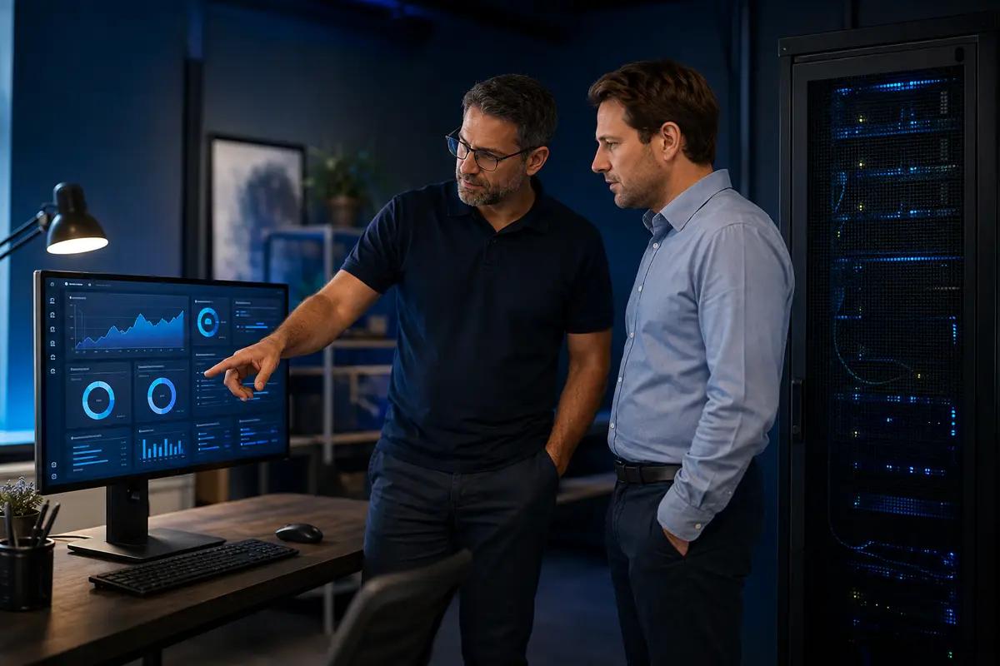

Private AI Chat
Ask questions, draft content and solve problems using locally hosted models.
Private AI that gives your team useful answers from your own documents—without sending sensitive information to public AI services.
Ask questions, draft content and solve problems using locally hosted models.

OCR, index, summarize and classify records, PDFs, scans and spreadsheets.

Get answers grounded in approved company documents—with source references.

Turn internal information into secure analysis and practical daily workflows.
BrainFarm USA installs and configures an autonomous private AI platform on a server located inside your company. Your files, prompts, model responses, embeddings and RAG knowledge base remain within your company-controlled network instead of being uploaded to a public AI service.
The AI models, company documents and knowledge base operate locally. Employees connect to the system through the company network, keeping sensitive information under company control.
When current outside information is required, the AI makes an authorized outbound request through the company firewall. Security rules can limit websites, block sensitive content from outbound requests and log activity for review.
The requested information returns to the private system. Once reviewed and approved, it can be indexed with its source and date so it becomes part of the company’s private RAG knowledge base.
For a 1–25 person business, this is a very capable private AI system. It is best thought of as an in-office AI employee for the whole company—not a replacement for every cloud AI tool or a giant data-center system.
The 2× NVIDIA L4 GPUs give it 48GB of total GPU memory. That is strong for local business models—especially fast 7B–14B-class models and many larger models in optimized or quantized form. It is a good fit for private chat, RAG document search and day-to-day productivity.
For most small businesses, that is actually the right balance: enough horsepower to be useful every day, without the cost, heat, power use and complexity of an 8-GPU H100 or A100 system. If usage grows, the planned path is to add L4 capacity first, then step up to L40S- or A100-class systems.
Both systems begin with the same current-generation processors, DDR5 ECC memory, storage, networking, private AI software and 2× NVIDIA L4 GPUs. Choose the compact 2U platform for rack density, or the 4U platform when you want maximum power, cooling and in-chassis headroom for upgrading from the entry-level to mid-level and ultimately the high-end A100 configuration.
Supermicro SYS-221H-TNR
Supermicro lists both L4 and A100 support for this DDR5 chassis, so the standard BrainFarm USA high-end conversion remains in the 2U system. The compact chassis has a tighter power and thermal envelope than the 4U platform.
Supermicro SYS-421GE-TNRT3
Supermicro lists both L4 and A100 support for this DDR5 chassis. The high-end conversion stays in the same 4U system, with room for the planned 6× 7.68TB data-storage tier, 25GbE networking and additional engineered GPU expansion.
This is more than a server purchase. BrainFarm USA helps your people use the system, develops and improves the private AI, maintains the hardware and supplies the components needed to expand capacity as your business grows.
Role-based training for employees and administrators, including safe-use policies, prompt development, workflow design and hands-on instruction using your company’s actual business needs.
We prepare and index approved company knowledge, refine prompts and retrieval rules, test answer quality and continue improving the AI and its RAG knowledge base as your business changes.
Available monthly service plans include scheduled system-health reviews, temperature, fan, memory, storage and GPU checks, preventive maintenance, firmware planning, issue diagnosis and capacity reviews.
BrainFarm USA supplies validated DDR5 ECC RAM, NVIDIA GPUs, enterprise SSDs and compatible installation hardware. When you upgrade, we will take eligible replaced parts in trade and apply their evaluated value as a discount toward the new parts.
BrainFarm USA combines the server, private AI software, validation and deployment planning into one practical starting point. It is designed for organizations that want to see real value from private AI while maintaining control of their information.

2× L4 → 4× L4 → 2× A100 80GB PCIe. The SYS-221H-TNR can reach the BrainFarm USA high-end A100 configuration without replacing the chassis. Choose it when a compact 2U footprint is the priority.
2× L4 → 4× L4 → 2× A100 80GB PCIe. The SYS-421GE-TNRT3 reaches the same high-end target with substantially more power, airflow, storage and GPU headroom. Choose it when maximum long-term expansion is the priority.
Tell us about your documents, users, security requirements and goals.